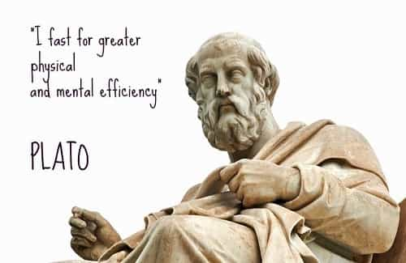
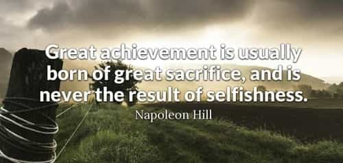

is an aspiring philosopher king, living the dream, travelling the world, hoarding FRNs and ignoring Americunts. He is a European at heart, lover of Latinas, and currently residing in the USA.


Lent is the Christian holiday period lasting 40 fasting days (45 days) prior to Easter. It is a period of reflection, particularly of resisting temptation, cleansing, and preparing for the new year. Many observers practice fasting, while others choose to sacrifice or abstain from a certain vice or pleasure.
Whether one is religious or not, there are benefits to abstaining from something of value, pleasure, and convenience. All major religions and many cultures have similar observances around this time of the year. And the most ardent observer of Lent that I know is my agnostic, hard partying, international traveling, bar owning bachelor uncle, who steadfastly gives up alcohol every Lent.

I encourage every man to give up something of convenience, a vice, or habit, during this time. And to particularly consider giving up masturbation.
First, I believe masturbation is normal, natural and healthy. This is not an article to shame men from the natural sexual urges we have. Just as those who fast do not hate food, abstaining from something sexual does not mean one views sexual desires or satisfying them, as bad or wrong.
The point is to force a man to give up something valuable and important, as a tool of self-discipline and reflection. If you are a very horny man in your teens or early 20s, already choking the chicken at least once a day, perhaps you would benefit more from another activity like fasting, giving up drinking or smoking, or video games. And indeed the choice should be a personal one for every man. But here we discuss the benefits of abstinence from masturbation.
Lent begins on Ash Wednesday (February 14, 2018) and ends on Easter. While western consumerist culture focuses on Jesus’ birthday, (a day likely not even important to Jesus himself), the most important Christian holiday is Easter, which celebrates the rite and miracle of Resurrection. Whether one believes in a deity or not, Resurrection can be symbolically seen as rebirth, as it is the time when flowers are blooming, spring is arriving, and short skirts and tank tops come out.
Traditionally, Christian observers prepare for Easter through prayer, self-denial, meditation, penance, and fasting. Some adherents will break the fast every Sunday. This is why there are 40 days excluding Sundays between Ash Wednesday and Lent. This is a personal decision, but completely abstaining from whatever you sacrifice is a more meaningful and difficult challenge.
Particularly for men in the West, the conveniences of modern life make us soft and spoiled. When a man can wake and within seconds, beckon hardcore sluts of every body type virtually to his bed, performing sexual acts men in the past could not even dream of, masturbation can become a crutch, a vice, gluttony.
Even the richest of kings in the past did not have such easy access to the wide array of visual stimulation available through HD pornography and live degenerate camwhores.
When we become a slave to our desires, we lose autonomy. Sacrificing self pleasure is about acknowledging and recognizing the power our emotions and sex drive has over us, and choosing how it will affect us.
The traditional sacrifices made during Lent were chosen because they gave pleasure. Beginning in the Middle Ages, meat, eggs and dairy were prohibited during Lent. What gives pleasure more than gratifying a sexual urge whenever it appears? And indeed, Thomas Acquinas acknowledged this by stating that these rich foods…
…afford greater pleasure as food, and greater nourishment to the human body, so that from their consumption there results a greater surplus available for seminal matter, which when abundant becomes a great incentive to lust.

A wealthy man likely sacrificed his idle time saving and investing, forgoing immediate pleasures for long term rewards. A strong man sacrificed his time and dietary choices putting in hard work building his body. A powerful man sacrificed personal endeavors for building relationships, businesses, or political connections that he later uses to accomplish great things. By sacrificing something of value, one sees the value in sacrifice.
Fasting and self-sacrifice during Lent in the past was a requirement for all Christians. Today, far fewer practice it. By observing this tradition, you are returning to your roots, your history, your customs.
First, do not feel bad if you don’t make it the full 40 days. The point is to forego something easy, satisfying, and convenient. Not to reach any predetermined calendar date. One should abstain at least a week. The first week to 10 days is extremely difficult. You may begin seeing all females of any age as sexual objects, and may feel horny all the time. You may become obsessed with sex. Your eyes will quickly search out any visible flesh.
I have abandoned this idea in the past, because my thoughts became so focused on sex and I had to release so I could return to normal functioning behavior. If you can make it a couple of weeks, but then it becomes too difficult, one could observe the Sunday free day. However, there is a “breaking point” after which it becomes much easier to continue to your goal.
Perhaps there is nothing wrong with acting immediately on our sexual urges. But this is what animals do. To observe and acknowledge the effects of this desire, and to see the control that the poosy has over us, is to become a truly strong and powerful man. Also there is a definitely a correlation between the last time your balls were drained, and your motivation to open and pursue women.
The ending of Lent, when you are ready to unleash your pent up energies, coincides with the beginning of Spring when women shed clothing and hit the beach! You will be more motivated to approach and meet women just when they are emerging from their winter hibernation.
In closing, I encourage all men to make some sacrifice during Lent, for personal enrichment, and to consider foregoing masturbation. For more on this subject, check out the writings of Aurelius Moner.
Read Next: Why Non-Christians Should Observe Lent